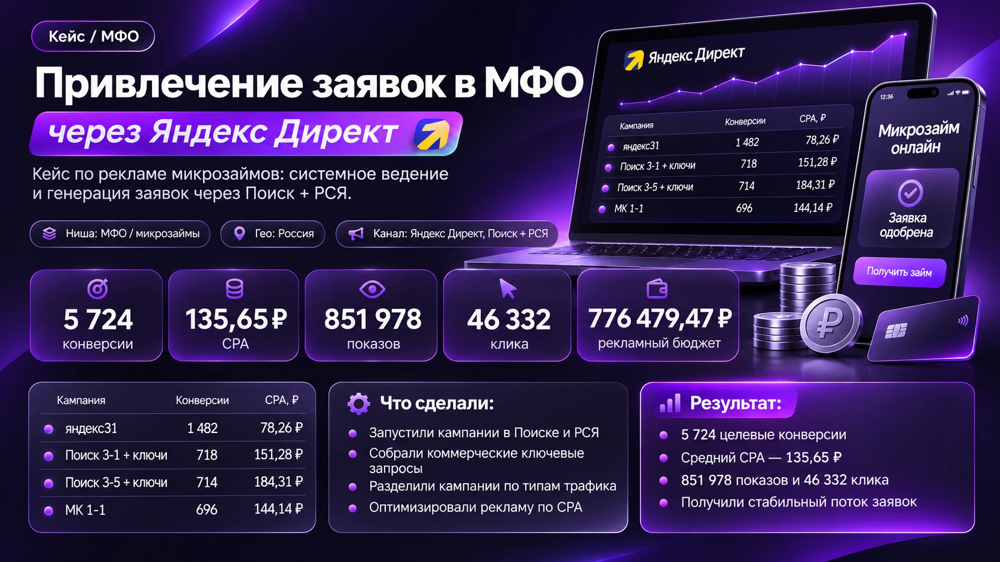
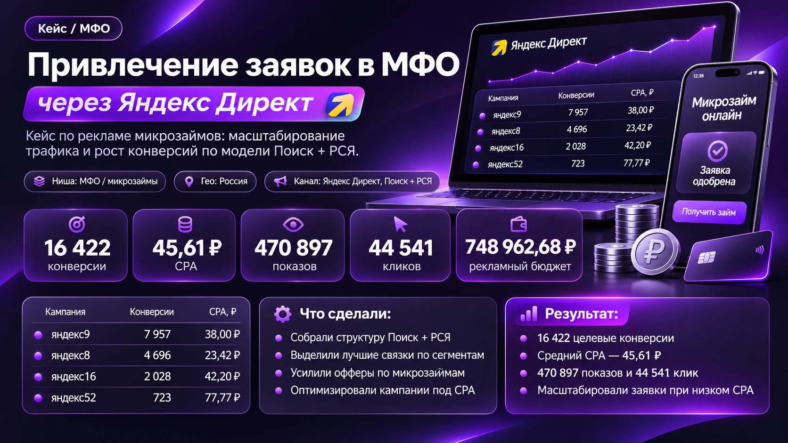

лида на оптовый пошив одежды
1 670 ₽ — стоимость лида ↗Реклама в Яндексе
для вашего бизнеса
Настраиваю и веду Яндекс Директ.
От анализа спроса до оптимизации
по обращениям и их стоимости.
01Анализирую
продукт, спрос
и аудиторию
02Запускаю
рекламные связки
и проверяю гипотезы
03Оцениваю
обращения и их
стоимость
Обсудить рекламудля бизнеса
!Для собственников бизнеса
и тех, кто отвечает за рекламу


конверсий · пластический хирург, Москва
888,96 ₽ — CPA в отчёте ↗конверсий по цели звонка · Good Sisters
Медицинские услуги на дому ↗конверсий по данным проекта GORDOV CODE
Разработка приложений для бизнеса ↗Что входит в продвижение?
Анализ продукта
и целевой
аудитории
ПрактикаРекламные связки,
креативы
и гипотезы
ЦифрыЗапуск кампаний
и оптимизация
по результатам
КонтрольМетрика, цели
и понятные
отчёты
АналитикаНачните с проектов и цифр. Посмотрите, как я работаю.
Показатели отдельных проектов не гарантируют аналогичный результат. Конверсии и результаты рекламных кабинетов не равны числу продаж или уникальных клиентов.
↗Каналы — Поиск и РСЯ
◎Контроль — обращения и стоимость
Обсудить рекламуПоиск + РСЯ
План и бюджет согласуем после знакомства с проектом.
Рекламный бюджет оплачивается отдельно, напрямую площадке.
Реклама
в цифрах
в цифрах
Бюджет → обращения → решения
Больше ясности в рекламе
Не нужно становиться
директологом, чтобы
понимать главное:
01
На что уходит бюджет
и какие действия учитываются
02
Что получилось в проекте
и чем подтверждены результаты
03
Что проверить дальше
в рекламе и на посадочной странице
Обсудить рекламуличное ведение
!Для собственников бизнеса
и тех, кто отвечает за рекламу
Обсудим продвижение
вашего бизнеса
Оставьте контакты — свяжусь с вами, чтобы уточнить задачу.
Заявка придёт мне в MAX. Продажи и окупаемость не гарантируются: они зависят от спроса, предложения, сайта и обработки обращений.
Посмотреть все кейсы и статистику ↗